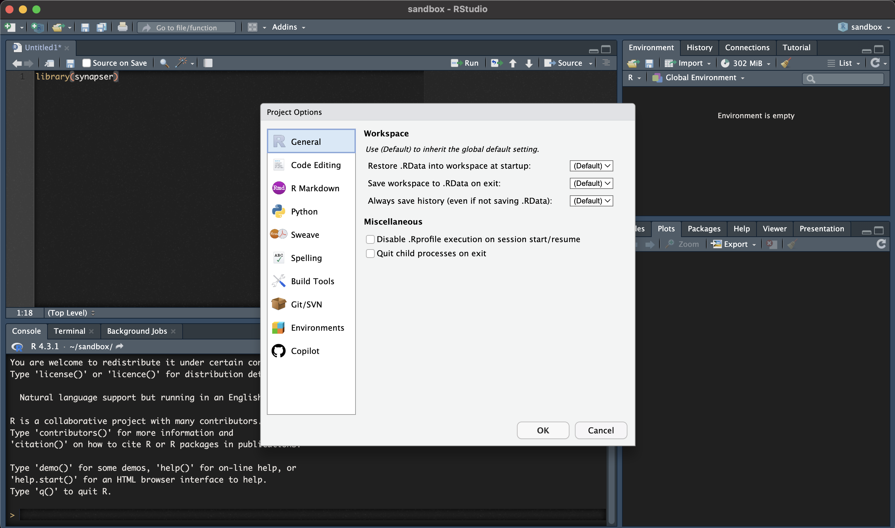
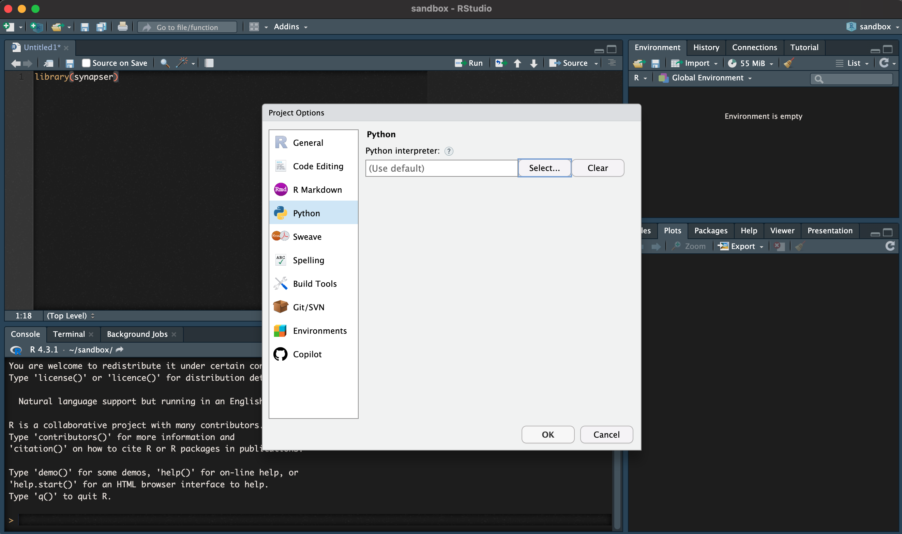
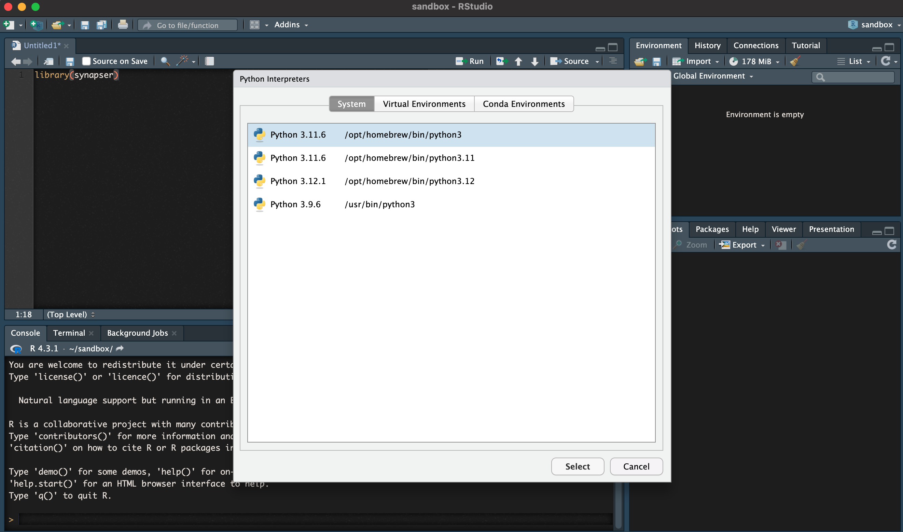
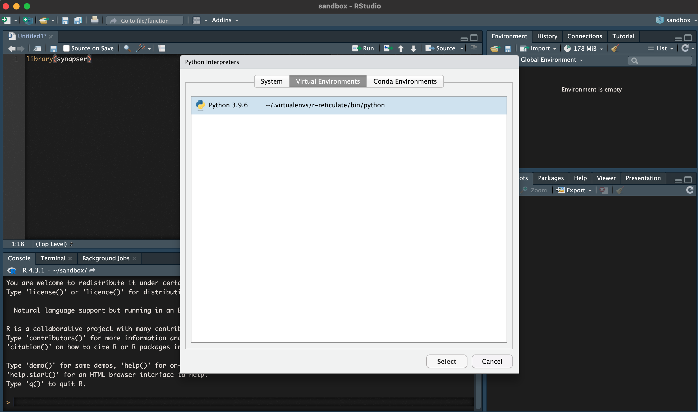
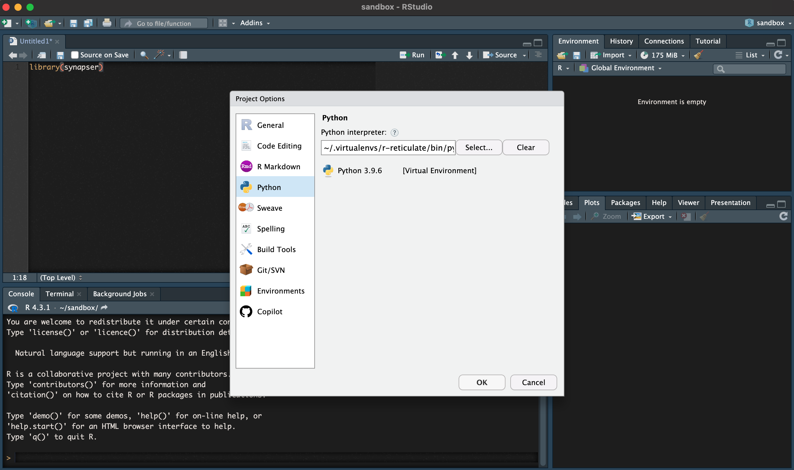

Synapser is a wrapper around the Python client. Due to this, there are some complexities in installing the package. Please follow this guide.
Synapser is only compatible with Python versions earlier than 3.12. Using Python 3.12 or later may result in errors. We have fully tested and recommend using Python 3.10 for optimal compatibility.
If you need to quickly switch between Python versions, we suggest using pyenv, which makes managing multiple Python versions straightforward.
We strongly recommend using pyenv to manage Python
versions, as it provides better compatibility and easier version
switching. This is especially important for synapser, which requires
Python 3.8-3.11 (we recommend Python 3.10).
Find more information about pyenv here
For macOS:
# Using Homebrew (recommended)
brew install pyenv
# Or using the automatic installer
curl https://pyenv.run | bashFor Linux (including Ubuntu/Amazon Linux):
# Install dependencies first
sudo apt-get update
sudo apt-get install -y make build-essential libssl-dev zlib1g-dev \
libbz2-dev libreadline-dev libsqlite3-dev wget curl llvm libncurses5-dev \
libncursesw5-dev xz-utils tk-dev libffi-dev liblzma-dev python3-openssl git
# Install pyenv
curl https://pyenv.run | bashFor Amazon Linux 2/RHEL/CentOS:
To make pyenv available permanently, you need to add it to your shell
configuration file. The temporary export command only works
for the current session.
Step 1: Determine your shell
echo $SHELL
# Common outputs:
# /bin/bash -> use ~/.bashrc or ~/.bash_profile
# /bin/zsh -> use ~/.zshrcStep 2: Add pyenv to your shell configuration file
For bash users:
# Add to ~/.bashrc (Linux) or ~/.bash_profile (macOS)
echo 'export PATH="$HOME/.pyenv/bin:$PATH"' >> ~/.bashrc
echo 'eval "$(pyenv init --path)"' >> ~/.bashrc
echo 'eval "$(pyenv init -)"' >> ~/.bashrc
# For macOS bash users, also add to ~/.bash_profile
echo 'export PATH="$HOME/.pyenv/bin:$PATH"' >> ~/.bash_profile
echo 'eval "$(pyenv init --path)"' >> ~/.bash_profile
echo 'eval "$(pyenv init -)"' >> ~/.bash_profileFor zsh users:
# Add to ~/.zshrc
echo 'export PATH="$HOME/.pyenv/bin:$PATH"' >> ~/.zshrc
echo 'eval "$(pyenv init --path)"' >> ~/.zshrc
echo 'eval "$(pyenv init -)"' >> ~/.zshrcAlternative: Manual editing You can also manually edit the configuration file:
Then add these lines to the file:
Step 3: Apply the changes
# Reload your shell configuration
source ~/.bashrc # for bash on Linux
source ~/.bash_profile # for bash on macOS
source ~/.zshrc # for zsh
# OR restart your terminalStep 4: Verify pyenv is working
# List available Python versions
pyenv install --list | grep " 3\.10"
# Install Python 3.10 (recommended version)
pyenv install 3.10
# Set as global default (optional)
pyenv global 3.10
# Or set as local for your project directory
cd /path/to/your/project
pyenv local 3.10
# Verify installation
python --version # Should show Python 3.10
pyenv versionIf you prefer not to use pyenv, you can install Python from the official installers:
Install Python from one of the official Python installers - version
3.8 to 3.11 (we recommend Python 3.10 for optimal compatibility) and
remove other versions of Python except for the one that ships with macOS
located in usr/bin/python (note for windows: make sure to
add Python to path if you’re planning on running the project from
outside RStudio, for example from terminal). TIP: You can verify which
version you have with….
% which -a python3
/usr/bin/python3 # <- Default Python shipped with macOS
% which -a python3
/usr/local/bin/python3 # <- Official Python installer (3.11.1 for me)
/usr/bin/python3 # <- Default Python shipped with macOSmacOS ships with Python by default - Python 3.8 or Python 3.9.6 at the location /usr/bin/python3 - but it doesn’t work well.
Only the official installer versions work. Seriously. Please do yourself a favor and avoid having a very long, sad day because you insisted on using the version that shipped with macOS by default. ## Install R
Install R > v4.1.3
Install RStudio Desktop
For Windows users, if you intend to run the project from outside
RStudio Desktop
(for example: VS Code or Terminal) the only additional step is to add R
to system path:
C:\Program Files\R\R-4.1.3\bin\R.exe
~/.virtualenvs/r-reticulate (or Conda if that’s your
preferred Python virtual env) and perform the below step. R-Studio will
re-create a virtual environment at that path using the correct Python
version. Manually specifying python at the official installation path
doesn’t always fix it.~/.virtualenvs/r-reticulate
before re-building (it will be re-created).$HOME\AppData\Local\R\win-library\4.2\00LOCK-synapser)/usr/bin/python3 - but it doesn’t work
well.C:\Users\USER\AppData\Local\Programs\Python\Python310\
Once that’s complete, we are ready to move on to selecting our desired Python interpreter. If the above fails, follow the steps below, then run the installation.
To select our desired Python interpreter, let’s navigate to Tools > Project Options (or Global Options)





In the example above, we can see that my desired Python 3.9.6 environment (your python version may be different, and that’s ok) installed from the official Python installer and NOT the Python version that shipped on macOS - is selected.
Below are step-by-step instructions for installing synapser using Python 3.10. If you followed the pyenv installation above, these steps will use your pyenv-managed Python. If you’re using a system Python installation, ensure it’s Python 3.10.
If using pyenv (recommended):
# This is a bash session - Not R code
# Verify pyenv is working and Python 3.10 is installed
pyenv versions
python --version # Should show Python 3.10
pyenv versionIf using system Python:
Remove existing reticulate virtual environment (provides a clean environment for installation):
# Remove any existing virtual environment
reticulate::virtualenv_remove(envname='r-reticulate')Create a virtual environment using your Python 3.10 installation:
If using pyenv (recommended):
# This will use the pyenv-managed Python 3.10
# You must replace '3.10.x' with the specific version you installed, e.g., '3.10.18'
reticulate::virtualenv_create(envname='r-reticulate', version = '3.10.x')If using system Python 3.10:
# Specify the system Python path explicitly
python_path <- Sys.which("python3")
reticulate::virtualenv_create(envname='r-reticulate', python = python_path)Install synapser using remotes (this will automatically handle dependency versions):
For the latest version:
# Install remotes if not already installed
if (!require("remotes", quietly = TRUE)) {
install.packages("remotes")
}
reticulate::use_virtualenv("r-reticulate", required = TRUE)
# Install the latest version of synapser (handles compatible dependency versions automatically)
remotes::install_cran("synapser", repos = c("http://ran.synapse.org", "https://cloud.r-project.org"))For a specific version:
# Install remotes if not already installed
if (!require("remotes", quietly = TRUE)) {
install.packages("remotes")
}
reticulate::use_virtualenv("r-reticulate", required = TRUE)
# Install a specific version of synapser (e.g., version 2.1.1.259 - major.minor.patch.build)
remotes::install_version("synapser", version = "X.Y.Z.AAA", repos = c("http://ran.synapse.org", "https://cloud.r-project.org"))Installing from source:
reticulate::use_virtualenv("r-reticulate", required = TRUE)
remotes::install_local(path=".", upgrade = "never")If you encounter issues with the rjson package compatibility (typically occurs if you have previously installed a newer version of rjson or are using a newer version of Python), you can manually install compatible versions:
remove.packages("rjson")
remotes::install_version("rjson", "0.2.21")
remotes::install_version("reticulate", "1.28")Then try step 3 again.
If you don’t have dependency conflicts, you can try the simple installation:
install.packages("synapser", repos = c("http://ran.synapse.org", "https://cloud.r-project.org"))